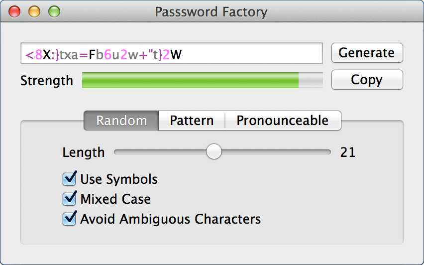

VoiceOver Help
Password Factory Help
Generate passwords in a variety of formats with flexible controls
Password Factory Help
Password Factory is a flexible password generator that can give you passwords in a variety of formats.
Window Basics
The window consists of the password viewing area and the password generating area.
Viewing Area

This area consists of three sections, the password viewing area, strength meter, and the control buttons.
The password viewing area shows the currently generated password. The password is either shown in black or highlighted. When the password is highlighted each type of character is shown in a different color. See Preferences - Password Display for more information.
Below the password field is the strength meter. The stength meter will fill and indicate the relative strength via a color. Red is weak, yellow is medium, and green is strong. The strength meter goes from 0 to 100 and 100 is the strongest.
The strength level is only a guide, and will not assure your password won't be hacked
To the right are two buttons, generate will generate a new password, and copy will copy the current password to the clipboard
Generate Area
This consists of three tabs 'Random', 'Pattern' and 'Pronounceable'. Each tab will generate a password using a different format.
Random Password
There are four options for genrating a random password
- Length
- This slider will set the length of the generated password, from 5 to 40 characters
- Use Symbols
- If this is checked symbols (i.e !,$,%) will be randomly added
- Mixed Case
- When this is checked uppercase and lowercase characters will be used, if it is unchecked, only lowercase will be used
- Avoid Ambiguous Characters
- If checked, characters that look like other characters will not be used, for example, 0,O,1,L